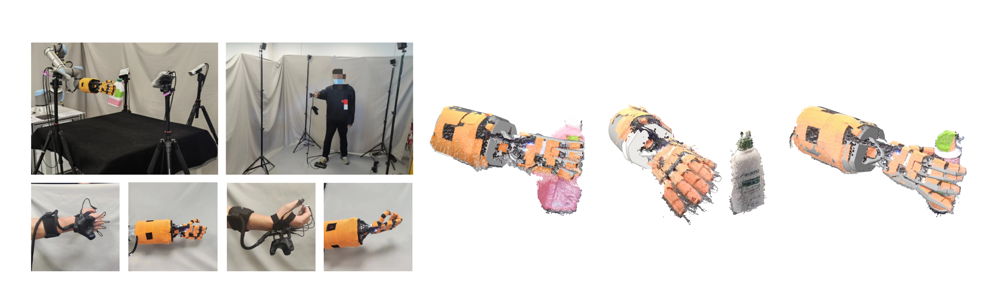
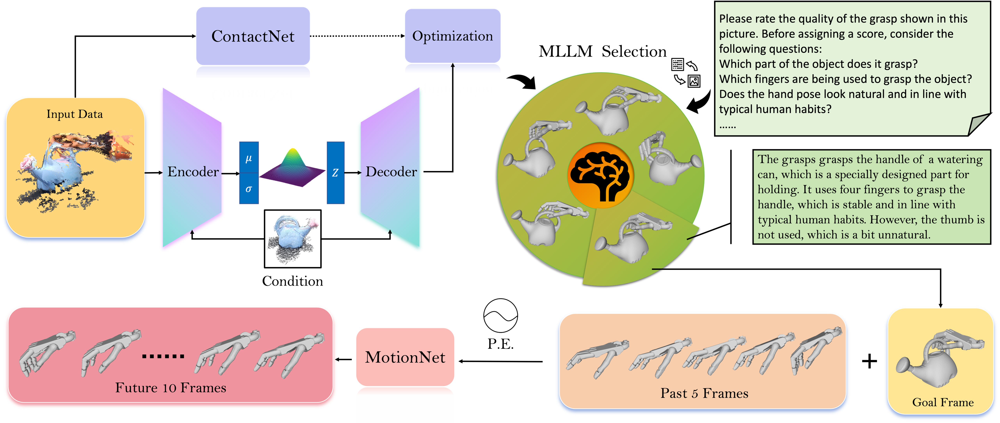
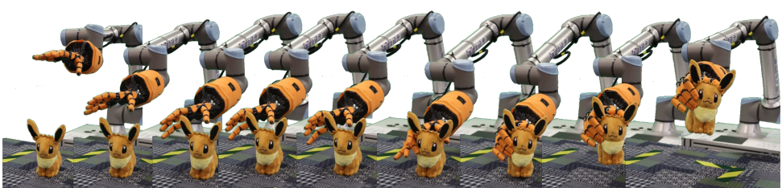

A pioneering dataset capturing authentic dexterous hand grasping motions infused with human behavioral patterns, enriched by multi-view and multimodal visual data.

Our data collection procedure incorporates with a vision capture system, a dexterous hand, and a teleoperation system.

The architecture of our grasping motion generation framework.
